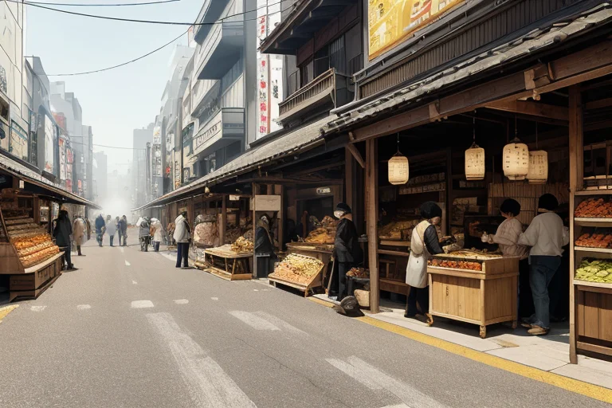
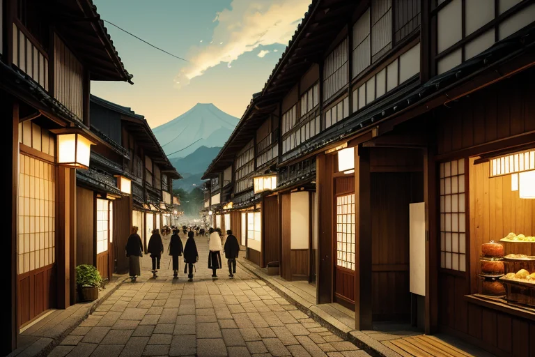
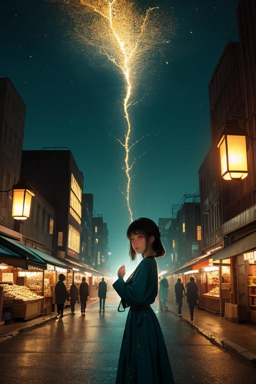

第一章 現実の福島
あなたはまだ気づいていない。この土地にも、王がいることを。
会津若松の市街地、朝市が立ち並ぶ通りは活気に満ちていた。地元農家が並べる桃の甘い香り、観光客でにぎわう赤べこ細工の店先、喜多方ラーメンの湯気が陽炎のように揺らぐ。金と人の流れが、確かにここにある。復興商都と呼ばれるこの日常のざわめきの底で、フクシマル・リボーンは立っていた。蒼と金の紋章が、彼の胸で微かに脈打つ。
彼の目には、この賑わいの下に走る「歪み」が見えていた。2011年3月の断層。それは物理的な亀裂ではなく、土地と人々の心に刻まれた、修復不可能に見える分断の痕跡だった。商売が成り立つ活気と、消えない喪失感。彼の役目は、この対極にある感情の密度が生む歪みを、日常の流れの中で微調整することだ。ラーメンの屋台の鍋がひっくり返らないよう風を一寸変え、観光バスのタイヤが舗装の微妙な段差を乗り越えやすくする。
彼は問い続ける。壊れた世界を、再設計できるか？ 答えは出ない。彼にできるのは、ほんの少し、壊れる速度を遅らせることだけだ。
第二章 歪みの兆候
喜多方のラーメン店の前には、朝から列ができていた。湯気が冷たい空気に溶け、人々の会話が活気を運ぶ。フクシマル・リボーンはその流れの傍らに立ち、目を細めた。人の流れ、金の流れ。そこには確かな再生の手触りがあった。しかし、彼の目には別のものが映る。舗道のごく小さな亀裂。観光客の足元を、ほんのわずか、滑りにくく調整する。バス一台分の重量が、古い橋の一点に集中しないよう、風向きを変える。
彼の耳には、二つの声が混ざり合う。土産物屋で赤べこを買う家族の笑い声。そして、どこからともなく聞こえる、重く深い地盤の軋み。商都線の歪みは、活気という表層の下で、静かに脈打っていた。磐梯山が噴火した痕跡である五色沼の水は、今日も静かに色を変えている。過去の大いなる破壊が、美として定着した風景。彼は己の役目を思い知る。彼は創造主ではない。あの日、止めることのできなかった破壊の、ほんのわずかな「続き」を、目に見えない形で引き受けている調整者に過ぎない。
列の最後尾で、小さな女の子が転びかけた。彼が指をわずかに動かす。吹いていた風が一秒止み、女の子は母親の手にしっかりと掴まった。壊れた世界を、再設計できるか？ 答えは、蒼と金の紋章のように、裂け目と修復が共存する景色の中にしかない。

第三章 王の葛藤
喜多方の蔵通り。観光客で賑わうラーメン店の列は、午後の日差しを浴びて延びていた。人々の欲望は純粋だ。美味しいものを食べ、良い写真を撮り、楽しい時間を過ごしたい。その一点一点が、この土地を再生させる力でもある。フクシマルは路地裏に佇み、その熱気を微かに調整していた。混雑による小さな転倒を防ぎ、焦りから生まれる苛立ちの火花を消す。
しかし、彼の目は店先を離れ、遠くの山並みへ向かった。磐梯山は穏やかな姿を見せている。あの日、この欲望の奔流が、別の形でこの地を襲ったことを、彼は忘れられない。復興、そして発展という名の下に押し寄せる人の波、金の流れ。それは確かに傷を癒すが、時に新たな歪みを生む。開発の手が、かろうじて保たれてきた均衡を壊そうとする瞬間がある。
「王様」
リヴィアがそっと肩に止まった。
「あなたは、あの日を止められなかったことを、今も責めていますね」
彼は答えなかった。守護とは、時に人間の歩みそのものを制御することなのか。それとも、その歩みが生む全ての結果を、ただ微調整し続けることなのか。蒼と金の紋章が、彼の胸の奥で静かに疼いた。

第四章 妖精との対話
鶴ヶ城の天守から、街の灯りがゆらめく。復興住宅の明かり、新設された工場のネオン、夜間も稼働する物流倉庫のスポットライト。人の営みは、確かにここに戻ってきた。
「王様、商いとは交換です」
リヴィアが、彼の耳元で囁く。その声は、磐梯山を流れる風のように静かだった。
「物と金。労力と対価。そして……喪失と希望も、交換されることがあります。あの日、多くのものを失った代わりに、この土地は『再生』という商品を手に入れました。残酷な言い方ですが、それが人の世界の理です」
彼は唇を噛んだ。原発事故の後、賠償金や復興予算が流れ、新たな産業が生まれ、人が動いた。それは確かに「再生」という名の経済活動だった。しかし、分断されたコミュニティ、戻れぬ故郷を前に、その言葉は軽すぎはしないか。
「あなたはそれを、単なる金の流れだと思っていますか」
リヴィアの声が、少し強くなった。
「違います。交換されるのは数字だけじゃない。避難した人が戻る決意と、ここで待つ人の覚悟。外から来る応援と、内に溜まった諦め。それら全てが、目に見えぬところで取り引きされ、少しずつ均衡を変えている。あなたの仕事は、その巨大な『取引場』の、ほんの少しの歪みを整えることです」
五色沼の水面のように、複雑に層を成す人々の思い。彼は、その全てを「再設計」することなどできないと悟っていた。できるのは、せいぜい、ほころびかけた縫い目に、蒼と金の光で一針、また一針と糸を通すことだけだ。
第五章 微調整と余韻
鶴ヶ城の石垣に、夕陽が蒼と金に染めていた。フクシマル・リボーンは、その影に立って、町を見下ろす。今日も、無数の選択が交錯し、小さな運命が生まれていた。彼は指を微かに動かす。帰宅を急ぐ主婦の足元の小石が、ほんの少し転がる角度を変える。そのせいで彼女は一瞬足を止め、空を見上げ、ふと、明日の買い物を思い出す。その思いが、翌朝の商店街の、ある店先での偶然の会話を生み、小さな取引が成立する。
彼は世界を再設計などできない。巨大な悲劇の傷跡を消すことも、分断を完全に癒すことも。彼にできるのは、このように、誰にも気づかれない、些細な均衡の調整だけだ。赤べこの玩具を見つめて泣く老人の涙を乾かす風は起こせないが、その涙が落ちる先の土に、ほんの少しだけ、翌春の桃の花の芽吹く力を添えることはできる。
歪みは続く。それでも、ここには、縫い目を渡る光がある。彼は蒼と金の紋章を胸に、静かに息を吐いた。今日も、壊れた世界に、目に見えぬ一針を刺した。
あなたの町にも、王がいる。